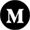
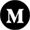

Furkan DOĞAN
Summary
I graduated from Ankara University Actuarial Sciences Department in 2022. In this process, I studied data science and software.
I am currently continuing my associate degree program in Anadolu University Computer Programming.
I am interested in web development and am planning my career in web development.
Education
- - Actuarial Sciences - Ankara University (2017-2022)
- - Computer Programming - Anadolu University (2022- )
Work Experience
- GST Medical (September-October 2015) - Technical support - Intern
- Ankara Numune Hospital (September-October 2016) - Technical support - Intern
Skills
- R - ⭐⭐⭐⭐
- Microsoft Office - ⭐⭐⭐
- Communication - ⭐⭐⭐⭐⭐
- Creativity - ⭐⭐⭐⭐
Certifications
- Data Camp Talent Development Program
- Introduction to Data Science with R
- A-Z™ | Data Science with R Programming
- Introduction to Python
- Global AI Hub Introduction to Machine Learning
My Hobbies
- Cinema 🎥
- Literature 📚
- Basketball 🏀
Contact Me
 @furkandoan
@FurkanDogan11
@furkan.doan
@furkandoan
@FurkanDogan11
@furkan.doan
+90 554 548 5875 📱
furkandgn9@outlook.com 📧